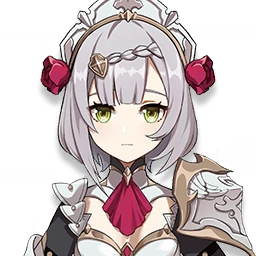
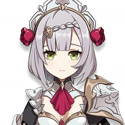
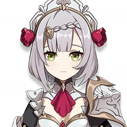
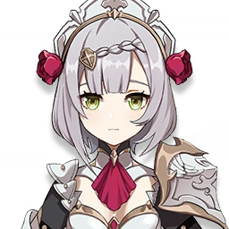

 

★★★★★
Nacido en el acomodado Clan Ragnvindr, es el actual propietario del Viñedo del Amanecer y un noble de gran estima en la sociedad de Mondstadt. Si bien un incidente pasado hizo que se separara de los Caballeros de Favonius, continúa protegiendo Mondstadt a su manera como el rumoreado "Héroe Oscuro".